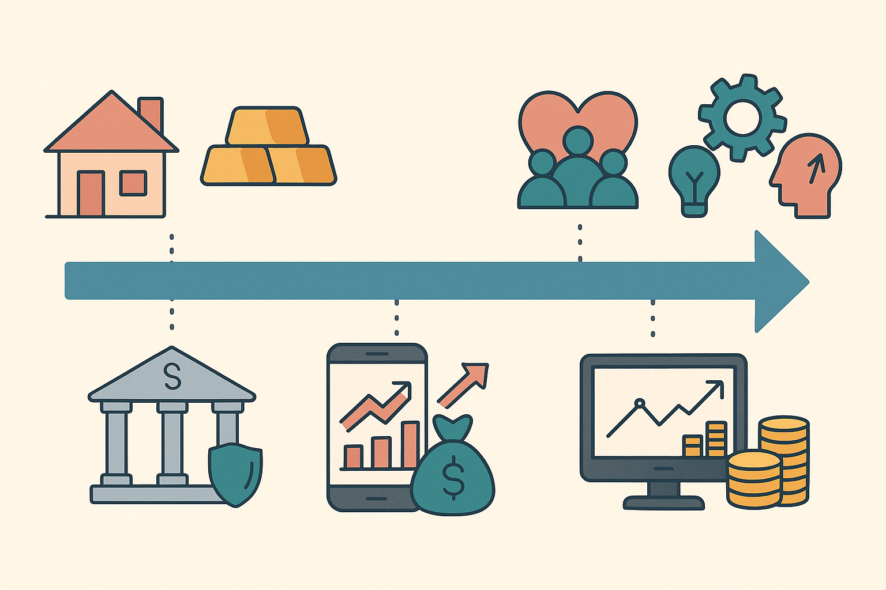

تطور معدل الادخار
شهد معدل الادخار تطورات كبيرة عبر التاريخ، يمكن تقسيمها إلى عدة مراحل رئيسية:
المرحلة التقليدية:
في هذه المرحلة، كان الادخار يتم بشكل تقليدي من خلال:
- ادخار النقود في المنازل
- شراء الأصول المادية مثل الذهب والعقارات
- الاعتماد على نظام التكافل الاجتماعي
المرحلة الوسيطة:
مع تطور النظام المصرفي، ظهرت أشكال جديدة من الادخار مثل:
- الادخار في البنوك
- صناديق الاستثمار
- التأمينات
المرحلة الحديثة:
في العصر الحديث، تطورت أدوات الادخار لتشمل:
- الادخار الرقمي
- الاستثمار في الأسواق المالية
- الادخار من خلال التطبيقات المالية
التوجهات المستقبلية:
من المتوقع أن يشهد معدل الادخار تطورات جديدة في المستقبل مثل:
- زيادة الاعتماد على التكنولوجيا المالية
- تطوير أدوات ادخار مبتكرة
- زيادة الوعي المالي